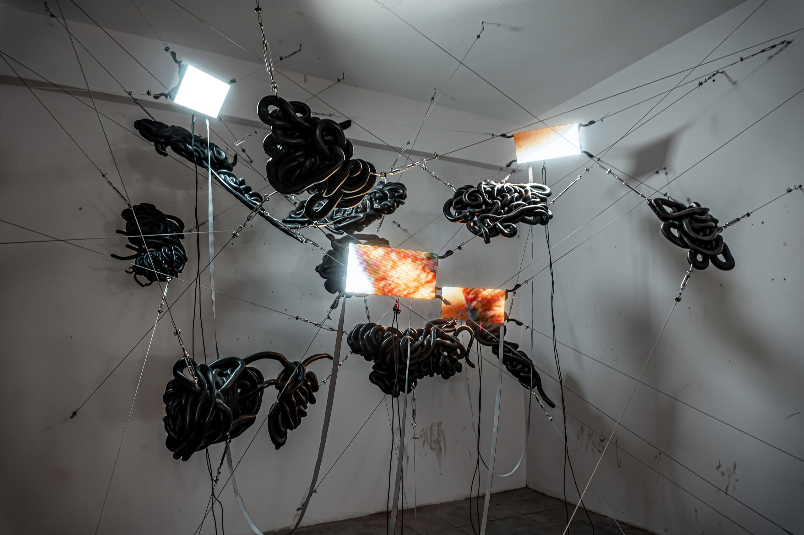
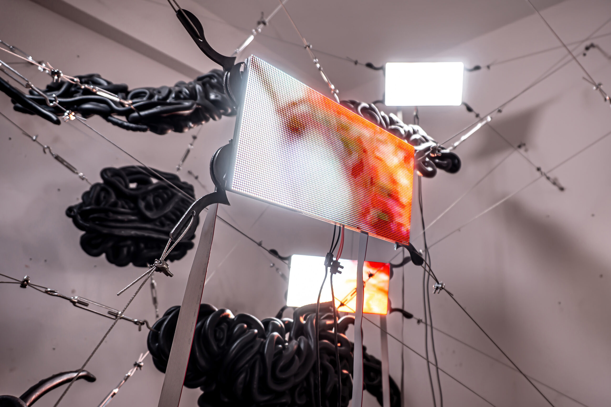
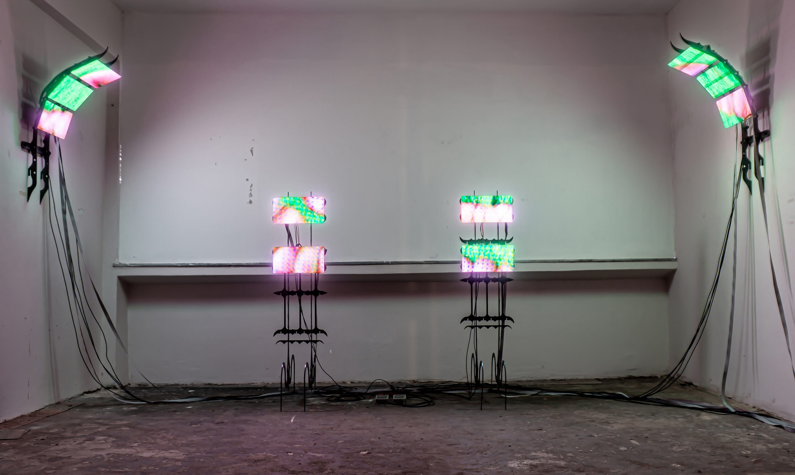
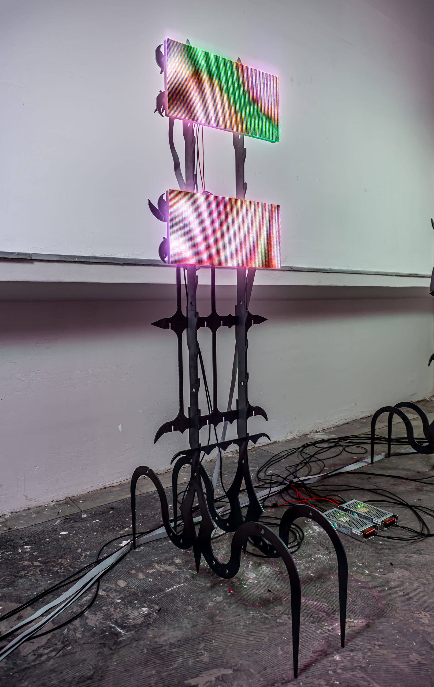
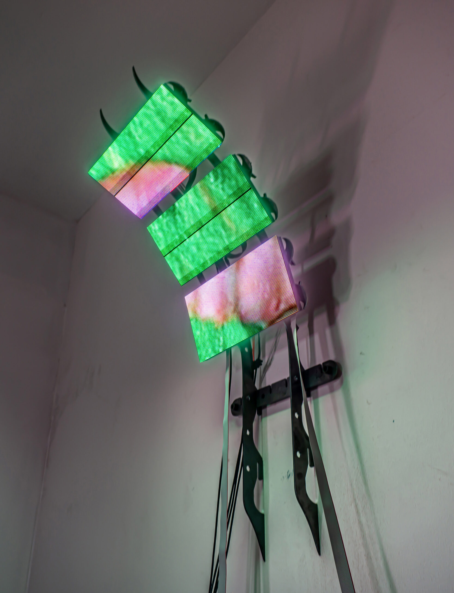
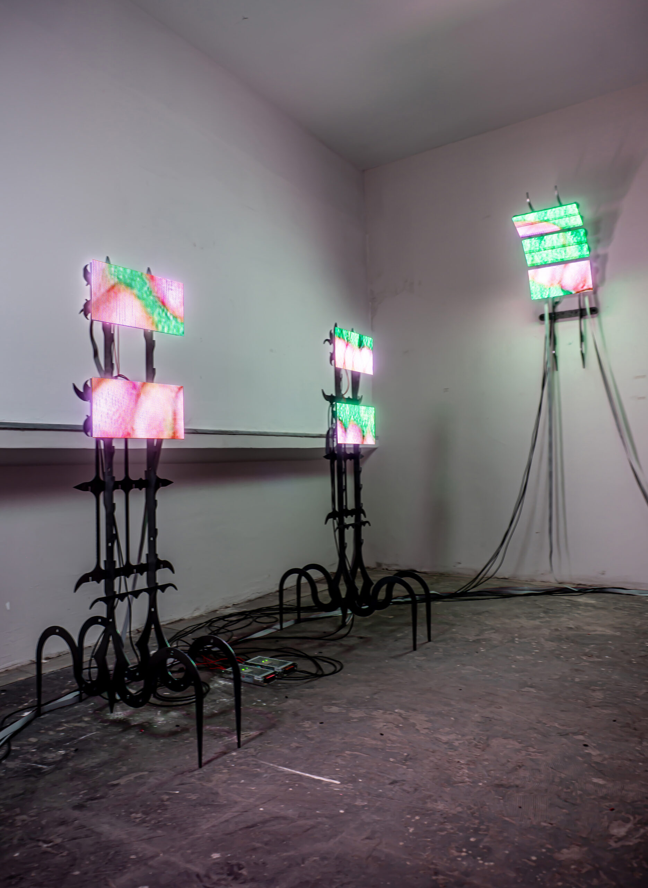

Opening - Closing Dates: 16 June 2022 – 04 July 2022
Exhibition SFX: Jtamul
Presented by Viable
Photography: Kerim Zapsu






Another night
another flight meandered and
brought the forgotten image nearer.
Closer, closer comes hand to face
further, further feels obstacle from place
Oh baby, baby, how was I supposed to know?
About crying lobsters and wild Bugatti’s
Goldberg variations played by Joe Rogan
gothic ornaments in an IKEA manual
and wanderlusts challenged with tweezers.
How was I supposed to know that we
the era of juxtaposition
was thus as concrete as ever?
Something wasn’t right, yeah.
Lemme tell you bout that light
that night I touched the database
and gave it the juice and
all that came out was wonders and doubts.
Words blurted out onto the screen of reason
spoken in a Victorian tone.
Medusa’s hair fell out and I
ain’t got the comb to straighten the knots.
Oh baby, baby, how was I supposed to know
that meaning is generated
prefabricated
in a reoccurring trend.